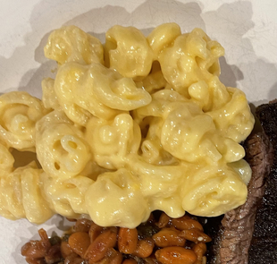

Creamy Cheese Sauce

Creamy Cheese Sauce for pasta or dipping
Everyone loves creamy cheesy macaroni! This sauce recipie will satisfy the kids as well as the most discerning connoisseur of fine comfort food.
The pasta or dipping medium is your responsiblity, but this sauce will take any cheesy need you have to the next level of nirvana
Ingredients
- 3 Tbs Salted Butter
- 2 Tbs Flour
- 1 Cup Whole Milk
- 1 Cup Half and Half
- 4 oz Velveeta Cheese Cubed
- 8 oz Cheddar Cheese Grated
- 1 tsp. Tabasco Sauce
- 1/2-1 tsp. Kosher Salt
Steps
- Melt butter in a medium sauce pan of low heat
- Combine the flour with the butter using a flat spatula and cook over low heat until slightly darker than original color
- Add Milk and Half and Half
- Raise heat to med/med high and stir constantly with a whisk
- Be patient and bring the mixture to a bubbling happiness
- When the sauce is bubbling it will become happy and start to thiken, Lower the heat to med/med low
- Change stirring utensil to large spoon or spatula
- Add Cubed Velveeta and allow it to melt
- Add the Grated Cheddar and allow it to melt
- Stir in the Tabasco and Salt
- Remove from heat and add to cooked pasta